TeachBayes Package
teachbayes_intro.RmdThe TeachBayes package was written to assist in the teaching of a “Beginning Bayes” course. There are a number of functions dealing with spinners, proportion, and mean inference. The purpose of this introduction to give a simple example of all of the functions. The material is divided into sections (1) Spinner Functions, (2) Inference for a Proportion, (3) Inference for a Mean, (4) Inference for Two Proportions and (5) Utilities
library(TeachBayes)Spinner Functions
(spinner_data, spinner_likelihoods, spinner_plot, spinner_probs, dspinner, many_spinner_plots)
A useful randomization device is a spinner that is defined by a vector of areas.
sp_regions <- c(2, 1, 1, 2)-
spinner_plotwill construct a plot of the spinner.
spinner_plot(sp_regions)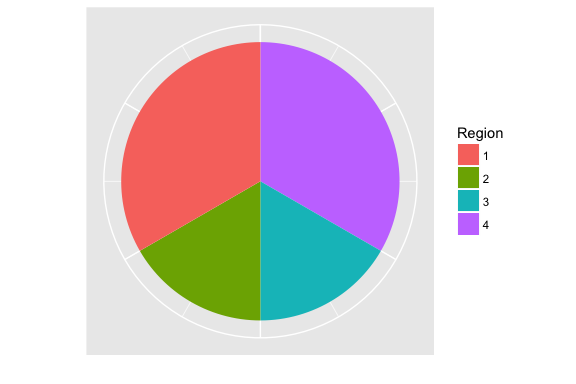
-
spinner_probsdisplays the spinner probabilities:
spinner_probs(sp_regions)## Region Prob
## 1 1 0.3333333
## 2 2 0.1666667
## 3 3 0.1666667
## 4 4 0.3333333-
spinner_datasimulates spins from the spinner:
spinner_data(sp_regions, nsim=20)## [1] 3 2 4 4 1 2 4 3 3 1 3 1 4 4 4 2 2 1 4 2Suppose we define multiple spinners:
sp1 <- c(1, 1, 1)
sp2 <- c(1, 2, 2, 1)
sp3 <- c(1, 1, 1, 1)
sp4 <- c(2, 2, 3, 3, 4)- We can use
many_spinner_plotsto display all of the spinners.
many_spinner_plots(list(sp1, sp2, sp3, sp4))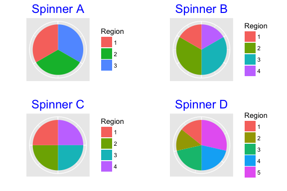
- Function
spinner_likelihoodswill compute a probability matrix for a group of spinners. This is used in a Bayes’ rule calculation.
(LIKE <- spinner_likelihoods(list(sp1, sp2, sp3, sp4)))## 1 2 3 4 5
## Spinner A 0.3333333 0.3333333 0.3333333 0.0000000 0.0000000
## Spinner B 0.1666667 0.3333333 0.3333333 0.1666667 0.0000000
## Spinner C 0.2500000 0.2500000 0.2500000 0.2500000 0.0000000
## Spinner D 0.1428571 0.1428571 0.2142857 0.2142857 0.2857143- Function
dspinnercomputes the likelhood function of spinners given a vector of spinner outcomes.
dspinner(c(1, 3, 4, 1, 2), LIKE)## [,1]
## [1,] 0.0000000000
## [2,] 0.0005144033
## [3,] 0.0009765625
## [4,] 0.0001338728Bayes’ Rule
(bayesian_crank, prior_post_plot)
Given a data frame with variables Model, Prior, and Likelihood, function bayesian_crank computes the posterior probabilities.
bayes_df <- data.frame(Model=paste("Spinner", 1:4),
Prior=rep(1/4, 4),
Likelihood=dspinner(c(1, 2, 1), LIKE))
(bayes_df <- bayesian_crank(bayes_df))## Model Prior Likelihood Product Posterior
## 1 Spinner 1 0.25 0.037037037 0.009259259 0.57123527
## 2 Spinner 2 0.25 0.009259259 0.002314815 0.14280882
## 3 Spinner 3 0.25 0.015625000 0.003906250 0.24098988
## 4 Spinner 4 0.25 0.002915452 0.000728863 0.04496604Function prior_post_plot will display the prior and posterior probabilities.
prior_post_plot(bayes_df)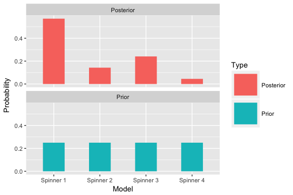
Inference for a Proportion
(beta_area, beta_data, beta_draw, beta_interval, beta_prior_post, beta_quantile, ChooseBeta)
-
beta_drawdisplays a single beta curve
beta_draw(c(10, 5))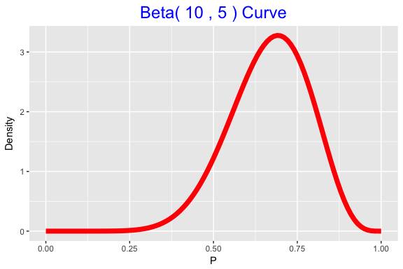
-
beta_areadisplays a beta area (probability)
beta_area(.4, .6, c(10, 5))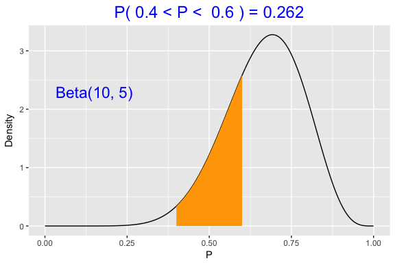
-
beta_quantiledisplays a beta quantile
beta_quantile(.7, c(10, 5))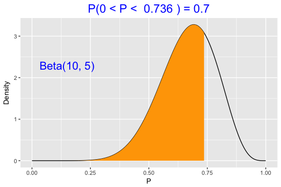
-
beta_intervaldisplays an equal-tails interval that contains a specific probability content
beta_interval(.8, c(10, 5))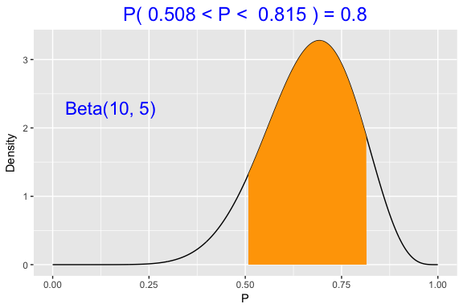
-
beta_datasimulates from a beta density
beta_data(c(10, 5), nsim=20)## [1] 0.6624386 0.6892925 0.8885531 0.5941585 0.6882665 0.5536465 0.5352331
## [8] 0.7840463 0.7664089 0.5572262 0.8199927 0.3708376 0.5061457 0.6963537
## [15] 0.7271161 0.6043688 0.8198348 0.6644863 0.8804722 0.8363086-
beta_prior_postwill graphically compare two beta curves such as a prior and posterior for a proportion
beta_prior_post(c(4, 4), c(20, 10))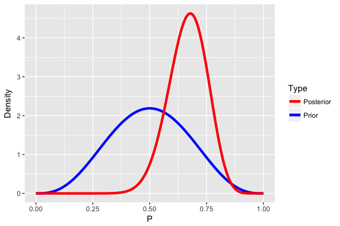
- Function
ChooseBetaruns a Shiny app for selecting a beta curve based on knowledge of the prior median and prior 90th percentile.
Inference for a Mean
(normal_area, normal_draw, normal_interval, normal_quantile, many_normal_plots, normal_update)
- Function
normal_areadisplays and computes a normal probability.
normal_area(90, 105, c(100, 15))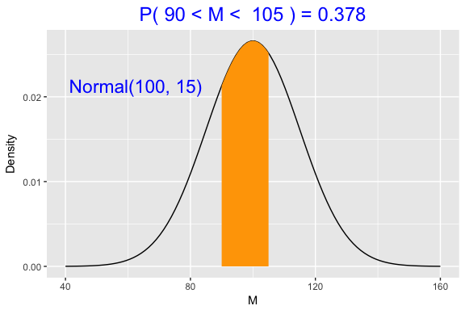
- Function
normal_drawwill draw a single normal curve.
normal_draw(c(100, 10))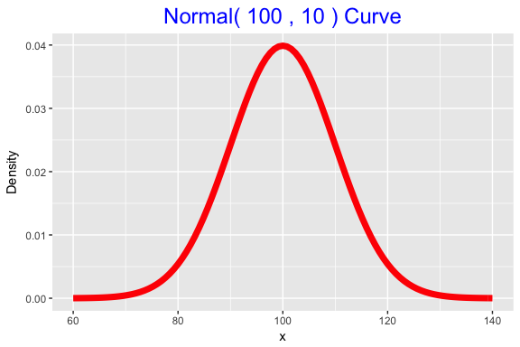
- Function
normal_intervalwill compute an equal tails probability interval.
normal_interval(.8, c(100, 10))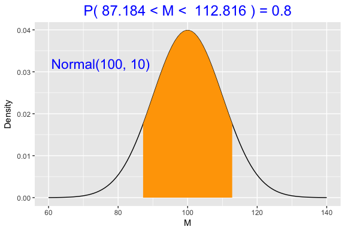
- Function
normal_quantilewill compute and show graphically a normal quantile.
normal_quantile(.3, c(100, 10))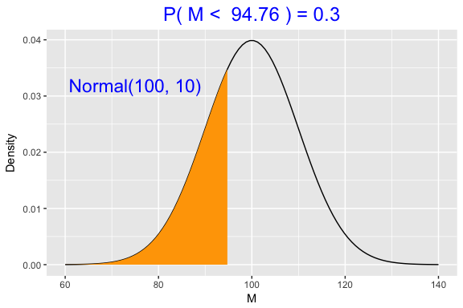
- Function
many_normal_plotswill display many normal curves on the same graph.
many_normal_plots(list(c(100, 10), c(110, 10), c(120, 10)))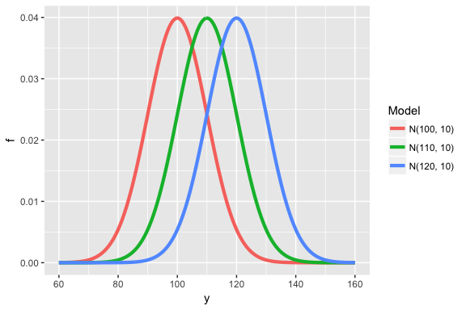
- Function
normal_updatewill give the posterior mean and standard deviation given the normal prior and the sample info.
prior <- c(100, 10)
ybar <- 120
se <- 15
normal_update(prior, c(ybar, se))## [1] 106.153846 8.320503normal_update(prior, c(ybar, se), teach=TRUE)## Type Mean Precision Stand_Dev
## 1 Prior 100.0000 0.010000000 10.000000
## 2 Data 120.0000 0.004444444 15.000000
## 3 Posterior 106.1538 0.014444444 8.320503Inference for Two Proportions
(testing_prior, draw_two_p, two_p_update, twoproplike, two_p_summarize)
- Function
testing_priorwill construct a discrete prior for two proportions.
testing_prior(.1, .5, 5)## 0.1 0.2 0.3 0.4 0.5
## 0.1 0.100 0.025 0.025 0.025 0.025
## 0.2 0.025 0.100 0.025 0.025 0.025
## 0.3 0.025 0.025 0.100 0.025 0.025
## 0.4 0.025 0.025 0.025 0.100 0.025
## 0.5 0.025 0.025 0.025 0.025 0.100- Function
draw_two_pconstructs a graph of a discrete distribution of two proportions.
draw_two_p(testing_prior(.1, .5, 5))
- Function
two_p_updatewill update a 2-proportion discrete prior with data.
prior <- testing_prior(.1, .5, 5)
(post <- two_p_update(prior, c(2, 10), c(4, 10)))## 0.1 0.2 0.3 0.4 0.5
## 0.1 0.0394392508 0.048580661 0.064700702 0.043771965 0.017259318
## 0.2 0.0121451654 0.239363641 0.079697327 0.053917632 0.021259762
## 0.3 0.0071889668 0.035421034 0.188697782 0.031914927 0.012584079
## 0.4 0.0027357478 0.013479408 0.017952146 0.048580661 0.004788848
## 0.5 0.0006903727 0.003401562 0.004530269 0.003064863 0.004833910Function
twopropllikecomputes a likelihood for two binomial proportions (currently this calculation is already in the two_p_update function).Function
two_p_summarizewill find the probability distribution for the difference in two proportions.
prior <- testing_prior(.1, .5, 5)
post <- two_p_update(prior, c(2, 10), c(4, 10))
two_p_summarize(post)## # A tibble: 9 x 2
## diff21 Prob
## <dbl> <dbl>
## 1 -0.4 0.000690
## 2 -0.3 0.00614
## 3 -0.2 0.0252
## 4 -0.1 0.0686
## 5 0 0.521
## 6 0.1 0.165
## 7 0.2 0.131
## 8 0.3 0.0650
## 9 0.4 0.0173Utilities
-
bar_plotconstructs a frequency bar plot of numeric data
bar_plot(spinner_data(c(1, 2, 3)))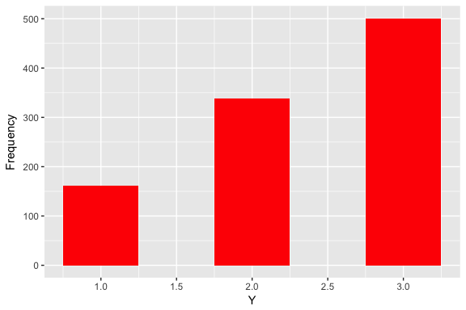
-
prob_plotconstructs a plot of a discrete probability distribution
prob_plot(data.frame(x=1:5, prob=c(.2, .3, .4, .1, .1)))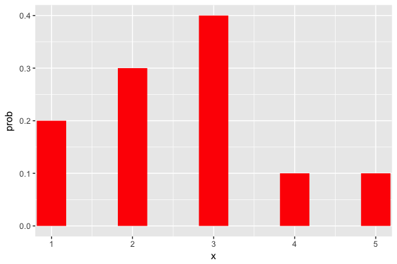